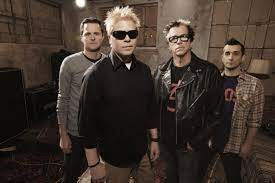

The Offspring

The Offspring é uma banda americana de punk rock formada em 1984 em Garden Grove, Califórnia. Eles se destacaram no final dos anos 90 com álbuns como Smash e Americana, tornando-se uma das bandas punk mais populares do mundo.
Álbuns Famosos
- Smash (1994)
- Ixnay on the Hombre (1997)
- Americana (1998)
- Conspiracy of One (2000)
Curiosidades
A banda começou como Nofx cover band e mudou seu nome para The Offspring. O álbum Smash é considerado o álbum independente mais vendido de todos os tempos.